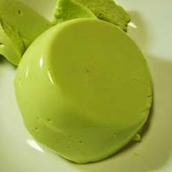

Puding Alpukat Lezat

Bahan:
- Susu sapi 850 cc
- Gula pasir 250 gram
- Agar agar 2 bks, usahakan yang putih
- Alpukat 2 buah, ambil dagingnya saja
- Air panas 100 cc
- Pasta cocoa 1 sdm
Cara Membuat :
- Cincang kasar buah alpukat.
- Masak gula, agar agar dan sus sapi hingga mendidih. Angkat dan aduk aduk terus, tambahkan alpukat cincang kemudian aduk hingga rata. Bila sudah agak dingin, masukkan pasta mocca kedalam adonan.
- Tuangkan ke dalam cetakan yang sudah dibasahi dengan air sebelumnya. Dinginkan.
- Jika sudah mengeras, potong potong dan sajikan.